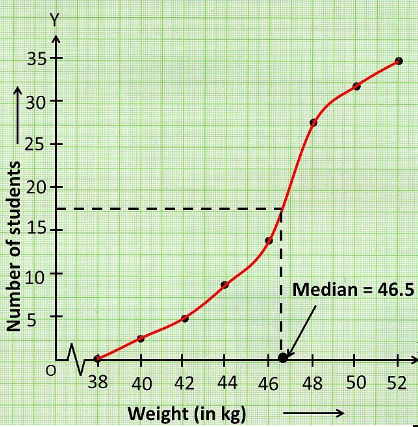

| Weight (in kg) | Number of students |
|---|---|
| Less than 38 | 0 |
| Less than 40 | 3 |
| Less than 42 | 5 |
| Less than 44 | 9 |
| Less than 46 | 14 |
| Less than 48 | 28 |
| Less than 50 | 32 |
| Less than 52 | 35 |
Upper limits of the classes and less than cumulative frequencies. Therefore required points are (38, 0), (40, 3), (42, 5), (44, 9), (46, 14), (48, 28), (50, 32) and (52, 35).
X-axis - upper limits 1 cm = 2 units.
Y-axis - less than c.f. 1 cm = 4 units.
Number of observations =
Locate the point on the ogive whose ordinate is .
The x - coordinate of this point is the required median.
From the graph, median = 46.5.
| Weight | Number of students | Frequency |
|---|---|---|
| Below 38 | 0 | |
| 38-40 | 3 | |
| 40-42 | 5 | |
| 42-44 | 9 | |
| 44-46 | cf 14 | |
| 46-48 (l) | f 28 | |
| 48-50 | 32 | |
| 50-52 | 35 |
17.5 belongs to the class 46-48
Median class = 46-48
l-lower boundary of class =
f-frequency of the median class =14
c.f = 14 , Class size = 2
Median = + =
Here median is by either by ways.